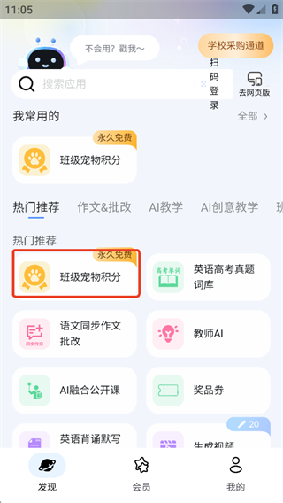
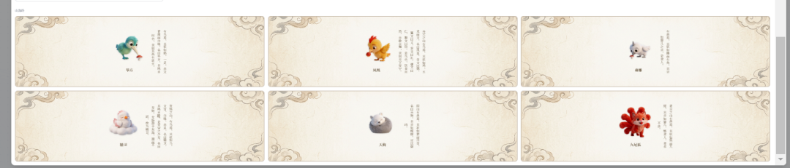

Our Teacher 快问快答：班主任人手一份的 AI 工具到底值不值得装
整理了关于 Our Teacher 的九组快问快答，从它是什么、班级宠物积分为什么火、高情商回复怎么填、安卓版怎么辨别正版到真实学校案例效果，一次讲清这款班主任专属 AI 工具的用法与边界。
整理一篇关于 Our Teacher 的快问快答——这款面向班主任和一线教师的 AI 工具近半年在教育圈讨论挺多，身边有老师在班级里用起了虚拟宠物积分，也有人在家长群里用它生成得体的回复。把常见的问题和直接了当的答案一次讲清。
它到底是什么，给谁用的？
一句话：给班主任和任课老师用的 AI 应用集合。它的官网上列着全部十几个应用卡片——它不是单一功能的"批改作业机器人"，而是把日常工作里高频但费脑子的活儿拆成了十几个独立的小应用——家校沟通话术生成、班级宠物积分管理、批量学生评语、家长通知、备课方案设计，这些都是单独的应用卡片，各自解决一个具体的小痛点。
开发者是上海皑顿信息技术有限公司，安卓端包名是 cc.ourteacher.chat，最新版本在 v2026.9.x 左右。备案号沪ICP备16014031号-13A，正规备案。
大家说的"班级宠物积分"是怎么回事？
这是 Our Teacher 里最火的功能，官方标注永久免费。核心玩法是：每个学生领养一只专属虚拟宠物，按时完成作业、课堂积极发言、主动帮同学这些正向行为会转化成积分，用来喂养宠物、让它成长升级；反过来不良行为扣积分，宠物会"生病"或"饥饿"。
说白了就是把传统班级里"小红花"的激励机制，换成了电子宠物的成长体系。《中国教师报》2026 年 7 月刊文专门讲过这种做法，浙江庆元县五都小学的语文组也把它作为教研实践，总结出"即时反馈、可视化成长，让抽象的行为规范变得鲜活可感"。
班级宠物入口在哪？怎么第一次就把它钉住？
很多老师第一次打开都找不到，原因是它不在底部导航的显眼位置，藏在"发现"栏的热门推荐分区里。第一次用的路径：底部切到发现栏 → 往下翻到热门推荐分区 → 找到带"永久免费"角标的「班级宠物积分」卡片 → 点进去。
进了功能页第一件事就是添加进常用。班主任开学后几乎每天都要加减分，钉在"我常用的"第一位能省下每次翻找的时间。发现页分区有十几个，实在找不到直接用顶部搜索框搜"班级宠物"最快。

宠物状态成了"无声的班主任"——积分不够宠物就饿着、生病了，学生自己会着急，老师反而不用天天讲道理。
"高情商回复"到底怎么用？家长群里那些难回的消息真的能帮上忙吗？
能帮上忙，但得会填那张四要素表单。表单的四个字段：我的身份是（说话者的角色，比如老师）、我要回复的人是（沟通对象，比如家长）、需要回复的内容是（原话或情境，比如家长发来"能遇到您这样的好老师……谢谢您老师！"）、我的态度是（期望的回复倾向，拒绝 / 表示感谢等等）。
填完点一键生成，AI 会按你的态度倾向组织得体的话术。典型用法包括：家长请求调座位、额外照顾时态度选"拒绝"生成委婉版本；家长表扬老师时选"表示感谢"生成不生硬的回应；成绩下滑、同学矛盾这些敏感话题也可以用来铺垫。
但有三条硬边界不能忘：涉及具体学生和事件的表述必须自己核对，AI 会臆造细节；语气校准要看你和这位家长的相处语境，AI 的"得体"是通用社交得体；收费、评优、政策解释这类内容不能让 AI 代答，必须以学校和教育部门的口径为准。
安卓版怎么辨别正版？怕装到套壳的
看包名，安卓系统识别应用的唯一标识。正规的 Our Teacher 安卓版包名是 cc.ourteacher.chat——安装时如果发现包名不是这个，直接停止安装，换官方下载重新下就行。
各分发渠道的版本号标注经常不一致：有的下载站标 v2026.8.1，有的标 2025.7.1，苹果 App Store 则标 2026.9.2。这是渠道更新滞后的常态，判断"是否最新"看应用内的更新提示就行。
体积约 66.92 MB，语言是简体中文。官方渠道公示的当期 MD5 是 32CDAE78424BDD3440A5C3AB7E65FA1A，不同渠道的包可能有差异，以官方发布为准。
这些功能都是免费的吗？
公开信息里能确认班级宠物积分是永久免费，家校沟通、备课方案、批量评语这些班主任专区的应用也都是免费开放的。官方没有公开的付费订阅或内购说明，从样本里标注的"永久免费"角标来看，核心功能组都在免费范围内。
和其他 AI 教育工具有什么不一样？
最大的不同是按教师的工作场景拆小应用，而不是做成一个通用的"AI 对话框"。你不需要先想"我要问 AI 什么"，而是直接打开"班级宠物积分"卡片、直接打开"高情商回复"表单——界面本身就是任务流程。
另一个差异是它的"落地感"。不是停留在"AI 能帮你 XX"的概念层面，而是已经有《中国教师报》报道、地方教育局教研实践这些公开案例。浙江五都小学语文组用的就是这套"电子生命"成长体系，把课堂发言、作业质量、同伴互助、遵守公约这些具体行为都量化成了宠物能量积分。想系统了解玩法细节可以翻Our Teacher文档。

有没有坑？
有，三个主要的：
第一，入口隐藏太深。新老师找不到班级宠物、找不到常用应用是高频反馈——第一次进发现页务必把常用功能钉住。
第二，AI 生成的话术是草稿，涉及具体学生和事件的必须自己核对。AI 可能在生成回复时臆造一些不存在的细节，直接发出去容易出事。
第三，安卓版渠道混乱。包名不是 cc.ourteacher.chat 的一律别装，版本号不一致是渠道滞后造成的常态，别因为看到不同版本号就慌。
值不值得长期用？
如果你是班主任——值得装。班级宠物积分是目前在一线课堂里有真实落地反馈的激励工具，高情商回复也确实能帮你少花时间在措辞上。但别把它当"AI 万能助手"，它是把你已经在做的事，换一个更省力的方式来做。源码和发布记录同步维护在 GitHub、Gitee 和 GitCode，按你习惯的平台去翻就行。